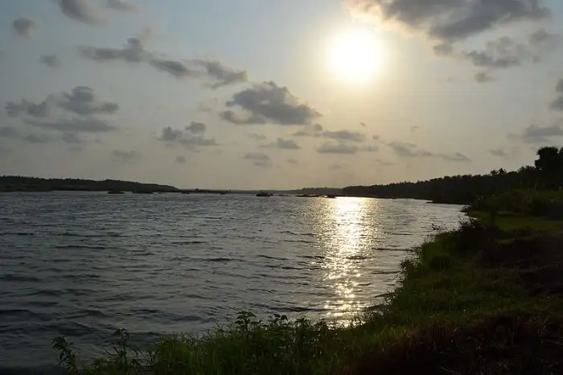

1.Kadalundi bird Sanctuary
location

A remarkable sanctuary hosting more than 100s of native bird species and 60 migratory bird species is widely known for its location. The peculiarity of the place is that the river kadalundi puzha flows into the arabian sea . travellers who are keen to know about such places, Kadalundi bird sanctuary is the best place for them. This is one of the most beautiful places in Malappuram.
2.Kodikuthimala
location

With its chilled climate and similarities to the town of ooty, kodikuthimala is one of the top spot tourist attractions of Malappuram. This is one of the most beautiful places in Malappuram. The place is roosted on a height of 522m above sea level and the highest point of Amminikkadan hills. It is the spot where ones the Britishers hoisted there flags during the colonial period.
3.Bharathapuzha
location
Also known as River Nilsa that provides shelter to 11 reservoirs with Malampuzha dam, it is the second longest river in Kerala. The river has been an integral part of the Malabar district and a sacred river for Hindus as there are mentions of the river in the ancient scriptures. This is one of the few rivers in Kerala with a spiritual and cultural significance for people, especially the famous cultural house of the state Kalamandalam is situated on the banks of the river.